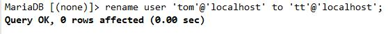
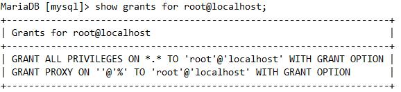

MySQL用户账号
用户账号有两部分组成：
'USERNAME'@'HOST'
HOST
支持通配符：%，表示授权所有主机 _匹配任意单个字符
用户管理
查询用户
创建用户
方法一：使用create user创建
方法二：直接在mysql.user表插入一条记录，这种方式很少用，在设置了严格的sql-mode（如TRADITIONAL），无法用
方法三：使用授权语句进行创建
grant all on *.* to tom@'localhost' identified by '123456';
删除用户
使用drop直接删除或者delete删除mysql.user表记录
但是drop删除更彻底
方法一：使用delete删除mysql.user表记录
注意：如果某些数据库授权给删除的用户，在mysql.db表用户对应的权限不会删除，再次创建此用户可能会报错
解决方法：1.删除mysql.db用户残留的权限后，使用flush privileges命令刷新
方法二：drop会删除mysql.user表与用户对应的权限
drop user tom@localhost;
重命名用户
rename user OldName to NewName;

修改或设置密码
1.管理员使用mysqladmin设置mysql用户密码
mysqladmin -u用户名 -p旧密码 password 新密码
示例:
mysqladmin -uroot -p111111 password 123456
当mysql用户没有密码 -p可以不指定
mysqladmin -uroot password 123456
2.使用root登陆后，使用 set password设置用户密码
设置root密码
设置用户密码
MariaDB [(none)]> set password for 'user'@'ip/host'=password('password');
或
MariaDB [(none)]> update mysql.user set password=passworD("New-password") where user='用户';
MariaDB [(none)]> flush privileges; //刷新数据库
3.忘记密码
前置条件：必须拥有服务器最高管理员（root）权限
1. systemctl stop mariadb
/usr/local/mysql/bin/mysqld_safe --skip-grant-tables &
“&” 表示在后台运行
然后修改密码

2.修改配置文件
修改my.cnf
skip-grant-tables
skip-networking #只允许本地连接

使用update命令修改管理员密码 关闭mysqld进程，移除上述两个选项，重启mysqld
授权管理
[参考]https://dev.mysql.com/doc/refman/5.7/en/grant.html
授权语法
grant 权限1,权限2,…权限n on 数据库名称.表名称 to 用户名@用户地址 identified by "连接口令";
当权限1,权限2,…权限n被all privileges或者all代替，表示赋予用户全部权限。
当数据库名称.表名称被*.*代替，表示赋予用户操作服务器上所有数据库所有表的权限。
用户地址可以是localhost，也可以是ip地址、机器名字、域名。也可以用’%'表示从任何地址连接。
‘连接口令’不能为空，否则创建失败
示例：
1.给本地用户授权
grant all on mysql.* to tom@localhost identified by '123456';
localhost与127.0.0.1属于两个用户连接方式
2.给远程用户授权
grant all on mysql.* to tt@'192.168.%.%' identified by '111111';
最后记得刷新权限,让其生效
flush privileges;
授权某个(多个)用户某个数据库某个(多个)权限
grant select on test.* to tom@'192.168.%.%';
grant insert,delete,update on test.* to tom@'localhost';
grant select on hellodb.* to tom@localhost,tt@localhost;
操作 MySQL 存储过程、函数 权限。
grant execute on testdb.* to developer@'192.168.0.%';
grant execute on function hellodb.test to tt@'192.168.%.%';
grant execute on procedure testdb.pr_add to 'tt'@'localhost';
更改或者删除存储函数或者存储过程的权限
grant create routine on testdb.* to tt@'192.168.0.%';
grant alter routine on testdb.* to tt@'192.168.0.%';
作用在表中的列上：
grant select(id, se, rank) on testdb.* to tt@localhost;
操作视图、查看视图源代码权限：
grant create view on testdb.* to tt@'192.168.0.%';
grant show view on testdb.* to tt@'192.168.0.%';
操作 MySQL 索引权限：
grant index on testdb.* to tt@'192.168.0.%;
创建、修改、删除 MySQL 数据表结构权限。
grant create on testdb.* to tt@'192.168.0.%';
grant alter on testdb.* to tt@'192.168.0.%';
grant drop on testdb.* to tt@'192.168.0.%';
操作 MySQL 外键权限：
grant references on testdb.* to tt@'192.168.0.%';
操作 MySQL 临时表权限：
grant create temporary tables on testdb.* to tt@'192.168.0.%';
如果用户有可能会跨越不安全的网络连接到数据库，可以强制用户使用ssl建立会话
grant usage on *.* to 'tt'@'222.222.222.222' require ssl;
取消上述的ssl连接限制，撤销强制使用ssl建立会话的限制
grant usage on *.* to 'tt'@'222.222.222'require none;
用户有权将已拥有的权限授予其他用户
grant select on testdb.* to tt@'192.168.%.%' with grant option;
除了grant option，管理员还可以通过如下选项对用户进行一些其他的限制
MAX_QUERIES_PER_HOUR：限制用户每小时执行的查询语句数量；
MAX_UPDATES_PER_HOUR：限制用户每小时执行的更新语句数量；
MAX_CONNECTIONS_PER_HOUR：限制用户每小时连接数据库的次数；
MAX_USER_CONNECTIONS：限制用户使用当前账号同时连接服务器的连接数量；
示例:
grant select on *.* to tt@'192.168.%.%' identified by '123456' with max_queries_per_hour 20;
grant select on *.* to tt@'192.168.%.%' identified by '123456' with max_updates_per_hour 10;
grant select on *.* to tt@'192.168.%.%' identified by '123456' with max_connections_per_hour 15;
grant select on *.* to tt@'192.168.%.%' identified by '123456' with max_user_connections 2;
如果将上述限制对应的数字改为0，则表示不限制。
查看授权
SHOW GRANTS FOR CURRENT_USER\G;
show grants for 用户名@主机；

查看数据库授权
select * from mysql.db where Db="你要查看的数据库"\G;
撤销授权
revoke "要移除的权限" on 数据库.表 from 用户@host;
revoke all on hellodb.* from tt@localhost;
注意：MariaDB服务进程启动时会读取mysql库中所有授权表至内存
(1) GRANT或REVOKE等执行权限操作会保存于系统表中，MariaDB的服务进程通常会自动重读授权表，使之生效
(2) 对于不能够或不能及时重读授权表的命令，可手动让MariaDB的服务进程重读授权表
mariadb > FLUSH PRIVILEGES;